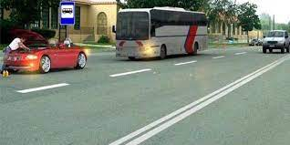
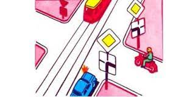
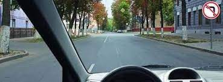
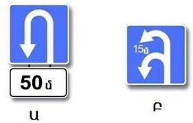
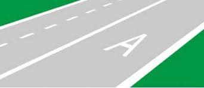
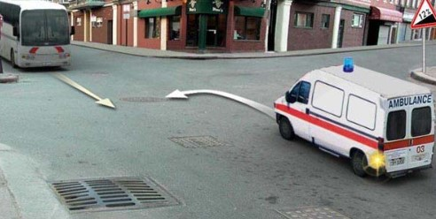
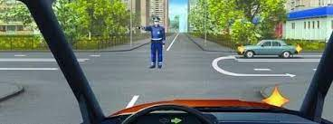
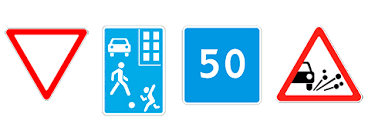
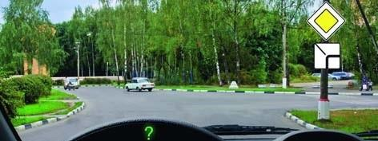

Թեստ 40
30:00
1. «Ճանապարհային երթևեկության անվտանգության ապահովման մասին» ՀՀ օրենքի համաձայն` «A» և «B» կարգերի տրանսպորտային միջոցներ վարելու միջազգային վարորդական վկայականները կարող են տրվել`
2. «Ճանապարհային երթևեկության անվտանգության ապահովման մասին» ՀՀ օրենքի համաձայն` հետիոտներին են հավասարեցվում`
3. Տրանսպորտային միջոցների շահագործումն արգելվում է, եթե`
4. Տրանսպորտային միջոցների շահագործումն արգելվում է, եթե
5. Ինչպե՞ս պետք է վարվի երթուղային ավտոբուսի վարորդը տվյալ իրավիճակում:

6. Տրանսպորտային միջոցները ի՞նչ հերթականությամբ խաչմերուկը կանցնեն:

7. Եթե կարգավորողի ձեռքերը կողմ են պարզված կամ իջեցված են, ապա ոչ ռելսագնաց տրանսպորտային միջոցների երթևեկությունը թույլատրվում է`
8. Այս իրավիճակում կանգառ կատարելիս ո՞ր ազդանշանի լուսային ցուցիչը պետք է միացնի վարորդը
9. Ո՞ր ուղղությամբ է թույլատրված երթևեկությունը

10. Ո՞ր դեպքում է նշված հետադարձի համար գոտու երկարությունը

11. Ո՞ր տրանսպորտային միջոցներին է թույլատրվում երթևեկել երթևեկելի մասի աջ գոտիով:

12. Ի՞նչ առավելագույն արագությամբ է թույլատրվում երթևեկությունը` մեխանիկական տրանսպորտային միջոցներով քարշակելու ժամանակ:
13. Պարտավո՞ր է ավտոբուսի վարորդը ճանապարհը զիջել "Շտապ օգնության" ավտոմոբիլին, եթե միացրած չեն կապույտ գույնի առկայծող փարոսիկը և հատուկ ձայնային ազդանշանը:

14. Աջ շրջադարձի ժամանակ պարտավոր եք ճանապարհը զիջել
15. Աջ շրջադարձ կատարելիս

16. Այս գծանշումը ցույց է տալիս
17. Ո՞ր նշանն է արագության սահմանափակում մտցնում

18. Գլխավոր ճանապարհով աջ շրջադարձ կատարելիս ազդանշան տալը
